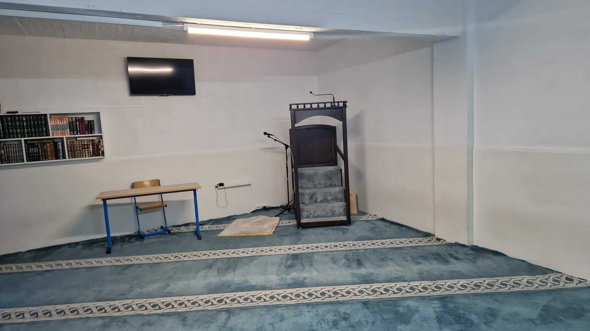
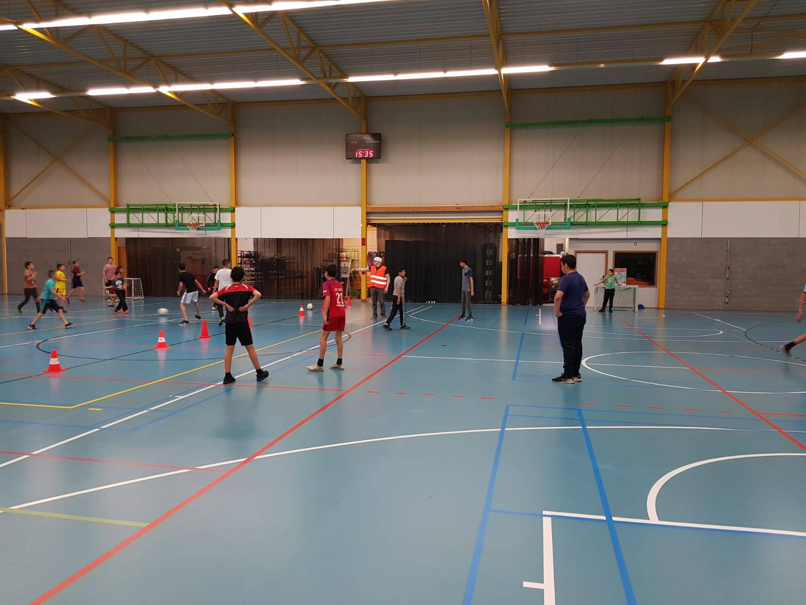
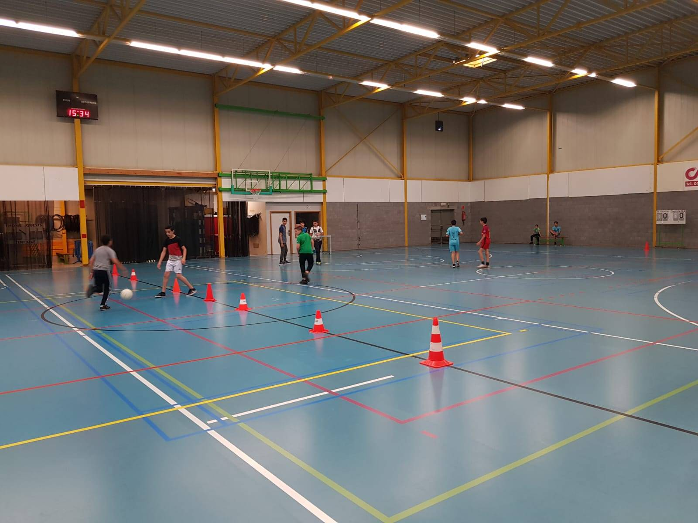
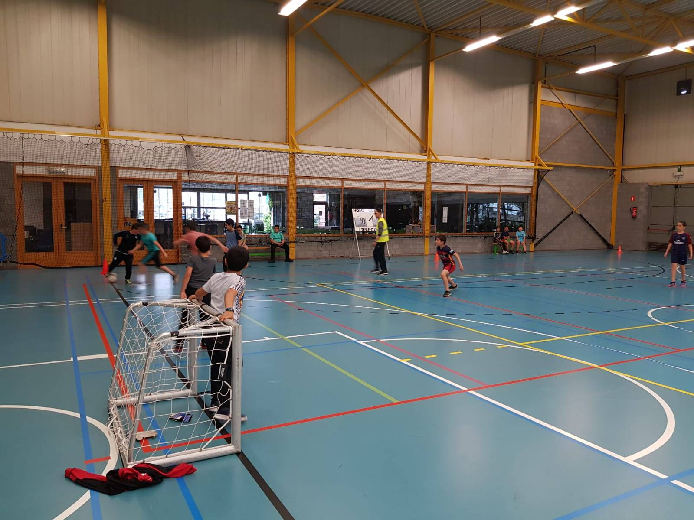

Een plaats van vrede, gebed en gemeenschap.
Stichting Al-Ikhlaas is een private stichting met hart voor de gemeenschap, gevestigd in Zemst (Hofstade)
aan de Tervuursesteenweg 7. Wij zijn een aanspreekpunt voor de moslimgemeenschap in de regio Mechelen-Zemst,
waar iedereen welkom is ongeacht achtergrond of afkomst.
Onze stichting werd opgericht met één duidelijk doel: een positieve bijdrage leveren aan de samenleving.
Wij geloven in de kracht van gemeenschap, verbinding en samenwerking. Of het nu gaat om het ondersteunen
van jongeren in hun opleiding, het organiseren van activiteiten voor ouderen, of het openstellen van onze
gebedsruimte — Al-Ikhlaas staat altijd klaar voor de mensen in onze buurt.
Wij werken nauw samen met andere organisaties in Mechelen, zoals de Mechelse Moskee en Al Buraq, om samen
een sterkere en hechtere gemeenschap op te bouwen. Dit toonden we onder andere tijdens de coronaperiode
in 2020, toen we samen de zorgverleners van AZ Sint-Maarten bezochten om hen te bedanken voor hun onmisbare werk.
Bij Al-Ikhlaas geloven we dat een sterke gemeenschap begint bij betrokkenheid, respect en samenwerking.
We nodigen iedereen uit om deel uit te maken van onze gemeenschap en samen te bouwen aan een betere toekomst.
Stichting Al-Ikhlaas werd officieel opgericht op 21 mei 2013 voor notaris Marc De Backer te Mechelen. De stichting werd opgericht door vier personen uit de Mechelse gemeenschap: de heren Aghdoui, El Bouchtati, El Haddioui en Bounaana. Sindsdien is Al-Ikhlaas uitgegroeid tot een actieve speler in de moslimgemeenschap van Mechelen en Zemst, met een blijvende inzet voor de lokale samenleving.
Al-Ikhlaas organiseert activiteiten voor de hele gemeenschap, jong en oud. We organiseren regelmatig sportactiviteiten zoals voetbal, waar jongeren elkaar kunnen ontmoeten en plezier maken. Daarnaast bieden we opvoedkundige lessen aan en sensibiliseren we de gemeenschap rond thema's zoals gezondheid en ecologie.



Stichting Al-Ikhlaas is een non-profitorganisatie die volledig afhankelijk is van de steun van de gemeenschap. Met uw donatie helpt u ons om activiteiten te organiseren, jongeren te begeleiden en onze gebedsruimte open te houden voor iedereen. Elke bijdrage, groot of klein, maakt een verschil. Samen bouwen we aan een sterkere en hechtere gemeenschap. Neem contact met ons op voor meer informatie over hoe u kunt bijdragen.
Al-Ikhlaas stelt een gebedsruimte ter beschikking voor de moslimgemeenschap in Zemst en omgeving. De gebedstijden worden bepaald op basis van de islamitische kalender en variëren doorheen het jaar. Neem contact met ons op of bezoek ons aan de Tervuursesteenweg 7 in Zemst (Hofstade) voor de actuele gebedstijden. We verwelkomen iedereen van harte.